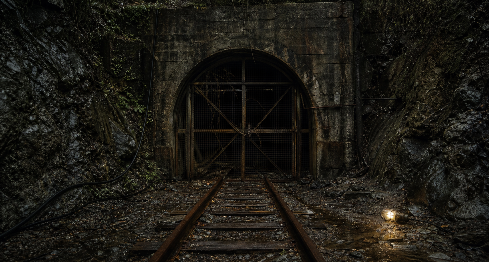

黒鉄鉱山
20問調査 /
MIN-1222
QUESTION DOSSIER
20問調査
ここでは核心を直接出さず、公開資料から拾える違和感を順に確認します。

Q01
公式・検索・掲示板を照合し、坑道図について気づいたことを短く書く
Q02
公式・検索・掲示板を照合し、集合場所について気づいたことを短く書く
Q03
公式・検索・掲示板を照合し、支線について気づいたことを短く書く
Q04
公式・検索・掲示板を照合し、更新時刻について気づいたことを短く書く
Q05
公式・検索・掲示板を照合し、画像の端について気づいたことを短く書く
Q06
公式・検索・掲示板を照合し、削除語について気づいたことを短く書く
Q07
公式・検索・掲示板を照合し、投稿順について気づいたことを短く書く
Q08
公式・検索・掲示板を照合し、公式説明について気づいたことを短く書く
Q09
公式・検索・掲示板を照合し、検索断片について気づいたことを短く書く
Q10
公式・検索・掲示板を照合し、資料番号について気づいたことを短く書く
Q11
公式・検索・掲示板を照合し、坑道図について気づいたことを短く書く
Q12
公式・検索・掲示板を照合し、集合場所について気づいたことを短く書く
Q13
公式・検索・掲示板を照合し、支線について気づいたことを短く書く
Q14
公式・検索・掲示板を照合し、更新時刻について気づいたことを短く書く
Q15
公式・検索・掲示板を照合し、画像の端について気づいたことを短く書く
Q16
公式・検索・掲示板を照合し、削除語について気づいたことを短く書く
Q17
公式・検索・掲示板を照合し、投稿順について気づいたことを短く書く
Q18
公式・検索・掲示板を照合し、公式説明について気づいたことを短く書く
Q19
公式・検索・掲示板を照合し、検索断片について気づいたことを短く書く
Q20
公式・検索・掲示板を照合し、資料番号について気づいたことを短く書く
調査メモを確認する